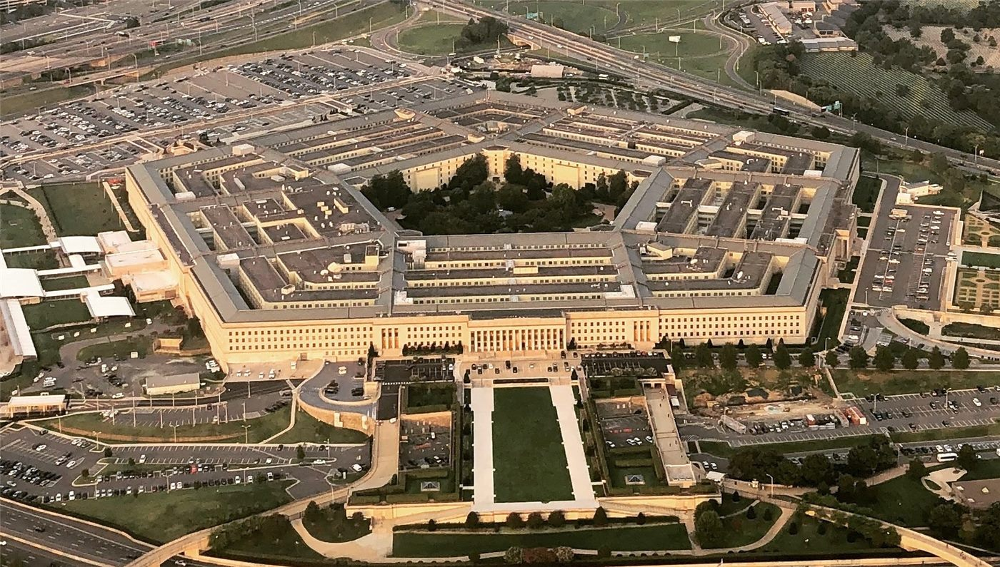

트럼프, AI 부대 창설 예고… 새 AI 차르도 임명키로
도널드 트럼프 미국 대통령이 19일 소셜미디어에 인공지능 부대를 만들겠다고 밝히고, 조만간 인공지능 정책을 총괄할 이른바 AI 차르를 새로 임명하겠다고 예고했다. 구체적인 편제와 추진 방식은 제시되지 않았다.
전홍발 기자 · 2026.09.21
橋국제

트럼프 대통령은 자신의 소셜미디어 트루스소셜에 첫 임기에 우주군을 창설했던 것처럼 인공지능 부대를 만들고 있다고 적었다. 우주군이 큰 성공을 거뒀다는 평가도 함께 붙였다.
광고 문의 · 300×250규제 방향에 대해서는 산업 성장을 가로막지 않겠다는 입장을 분명히 했다. 그는 이 산업의 성장을 어떤 식으로도 억제하지 않고 오히려 소중히 여기며 돕고 지키겠다고 밝혔다. 다만 불량 행위는 주시하겠다며, 그런 문제는 기존 형사·민사 사법체계로 충분히 다룰 수 있다고 덧붙였다.
AI 차르 자리는 공석 상태다. 벤처투자자 데이비드 색스가 이 역할을 맡았다가 봄에 물러나 외부 자문으로 옮겼다. 예고대로라면 트럼프 대통령이 임명하는 두 번째 AI 차르가 된다.
군 조직으로서 인공지능 부대가 실제로 만들어지려면 의회의 예산 승인과 법적 근거가 필요하다. 우주군 창설 당시에도 국방수권법 통과까지 상당한 논의가 있었다. 기존 사이버사령부 및 각 군 정보 조직과의 임무 중복을 어떻게 정리할지가 첫 관문이 될 전망이다.
아시아 각국도 관련 움직임을 주시하고 있다. 인공지능 기술은 반도체 수출 통제, 데이터센터 투자, 인재 이동과 맞물려 있어 한국·대만·일본의 산업 정책에 직접 닿는다. 군사 영역의 제도화가 민간 기술 규제 방향까지 바꿀지가 관심사다.